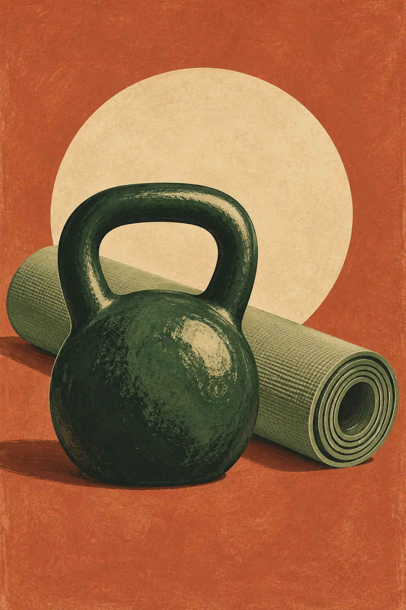
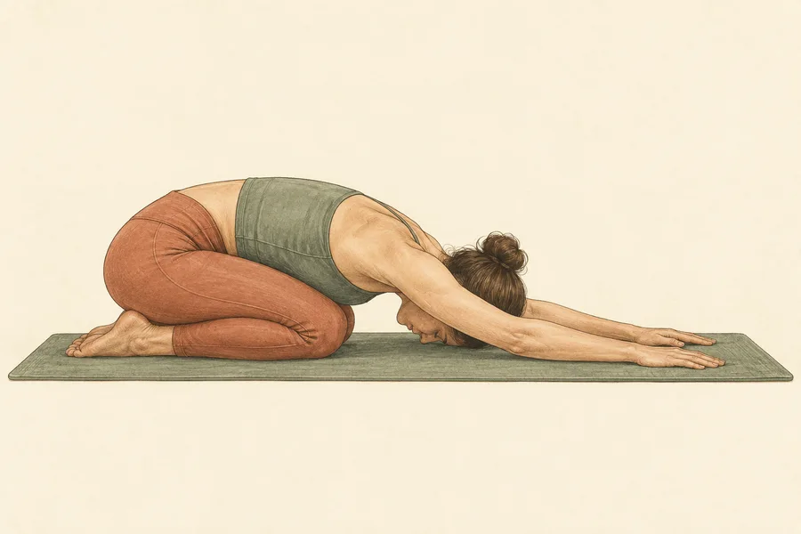
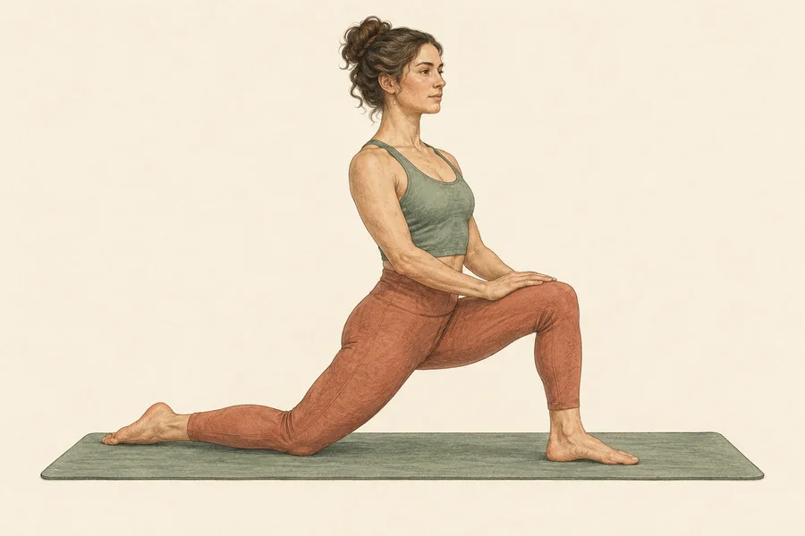
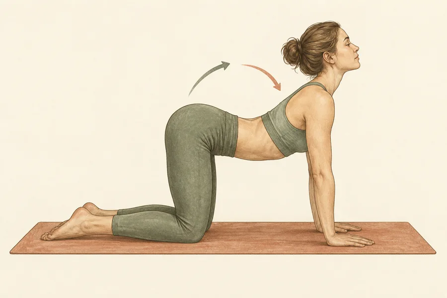
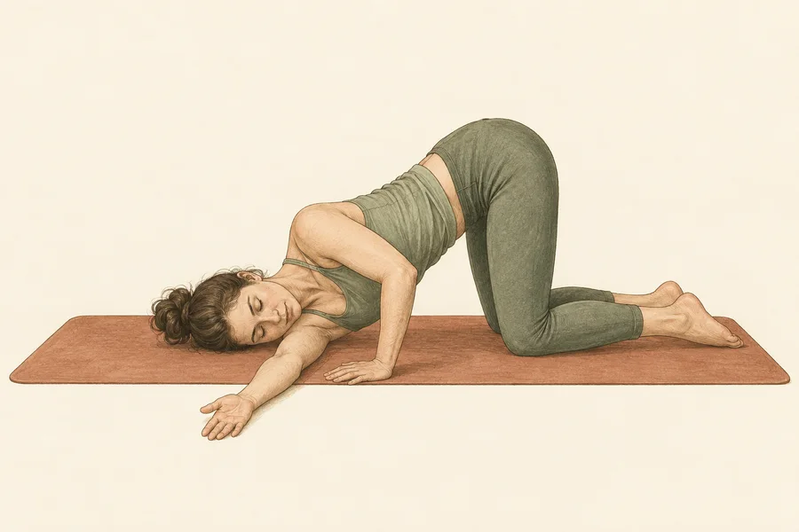
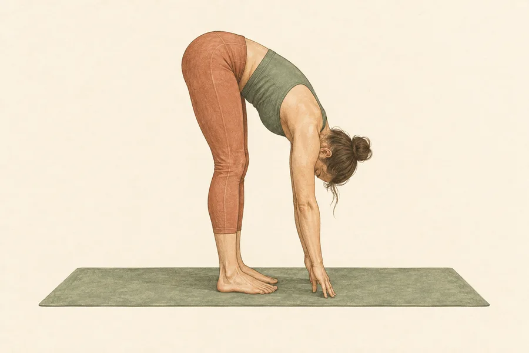
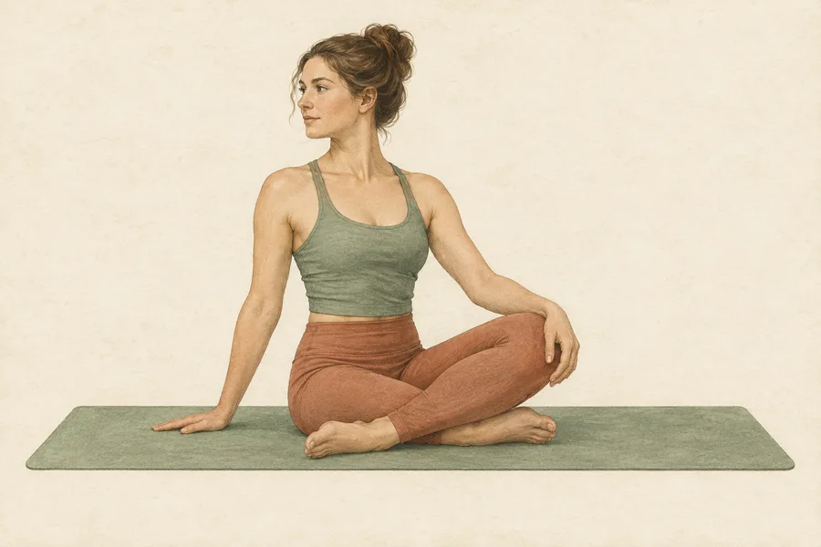

Train with purpose
Full body sessions built around the kettlebell basics.
SIMPLE WORK. LASTING STRENGTH.
A steadier way to get strong. One kettlebell, a plan that grows with you, and space to recover.

Work the essentials. Change just enough each week to stay engaged. Make room for mobility, food, and rest. The whole practice fits into real life.
Full body sessions built around the kettlebell basics.
Short and longer yoga flows for the days between.
Simple food habits and progress at your pace.
02 / YOUR TRAINING
A little variation, a lot of consistency.
Small steps add up.
03 / THE MOVEMENTS
A practical reference for every exercise in your plan.
These short notes are a starting point. Choose controlled movements and a manageable bell. The linked guides offer more detailed demonstrations.
Progress is a practice,
not a finish line.
04 / MAKE SPACE
A little quiet movement goes a long way.

Unwind your hips, shoulders, and back after a session.

A slower full body flow to make room for the next week.
A VISUAL GUIDE
Move gently, breathe comfortably, and use a smaller range whenever it feels better.

On hands and knees, alternate a gentle rounded and lengthened spine with your breath.
Step one foot forward, rest the back knee, and let your hips settle without forcing them.
Rest your hips toward your heels and reach forward, leaving room to breathe.

Slide one arm under your chest and let that shoulder lower gently toward the floor.

Soften your knees and hinge forward, letting your head and arms hang easily.

Sit tall and rotate gently from your upper body. Repeat on the other side.
Pose cues informed by Yoga Journal’s pose library ↗. Illustrations are visual position guides.
05 / EVERYDAY FUEL
No rigid rules. Just useful habits you can return to.
Make room for vegetables or fruit, a source of protein, and satisfying whole grains or other fiber-rich foods.
Keep water nearby and drink more when you are active or it is hot. Let thirst and your routine guide you.
Keep simple staples on hand: eggs or beans, frozen vegetables, fruit, yogurt, and a grain you enjoy.
Consistency comes from meals that fit your life, culture, budget, and appetite.
PUT IT ON THE TABLE
Mix, swap, and repeat. Use what fits your taste, budget, and appetite.
Oats, plain yogurt or fortified soy yogurt, berries, and a spoon of nuts or seeds.
Brown rice or another whole grain, chickpeas, greens, roasted vegetables, and lemon-tahini dressing.
Broccoli and sweet potato with baked salmon or tofu. Finish with herbs and lemon.
Ideas informed by USDA MyPlate meal tips ↗, MyPlate snack ideas ↗, and CDC drink guidance ↗.
06 / MAKE IT YOURS
Tell us where you're starting. Your goal, experience, and schedule shape your workouts. Your height and weight stay here for your own reference.